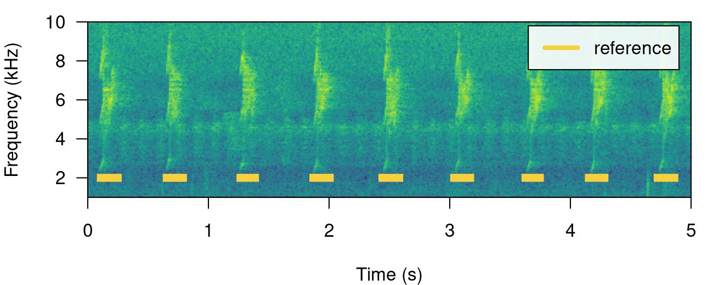
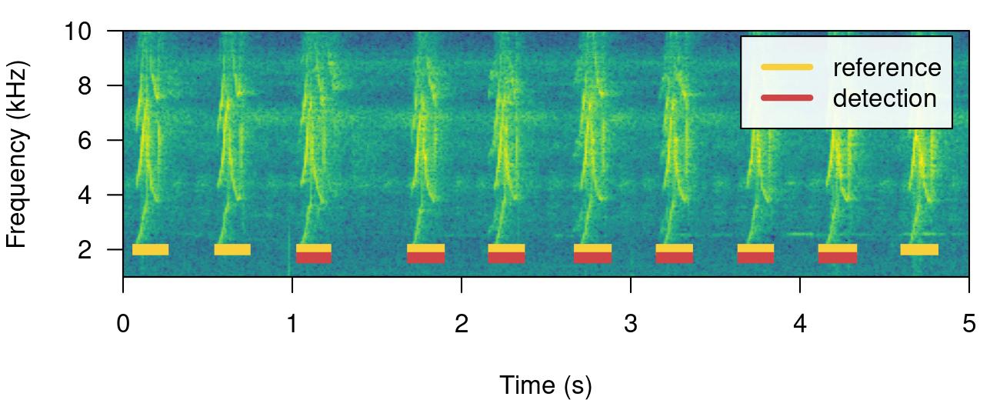
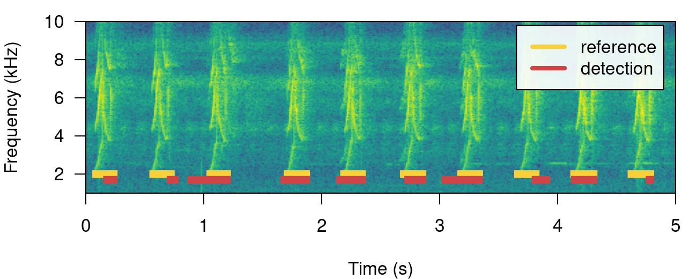
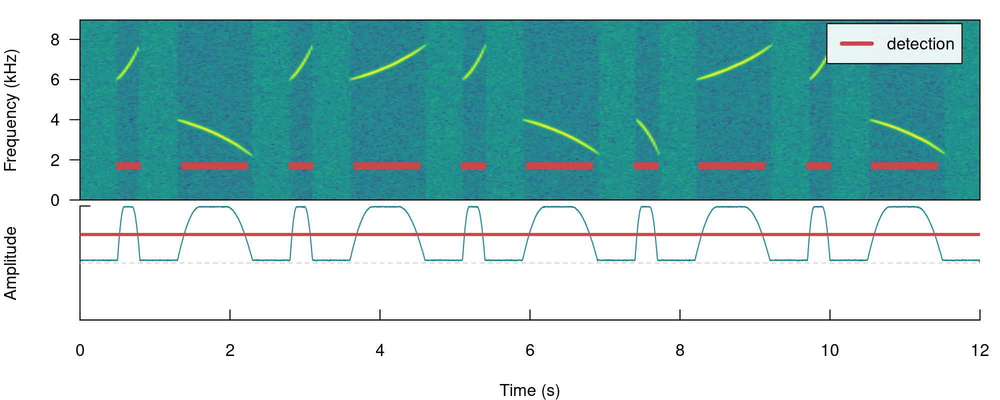

Code
# install pacakge
remotes::install_github("maRce10/ohun")
#load package
library(ohun)Get familiar with concepts and data formatting practices related to automatic acoustic signals detection
Learn how to run automatic detection using the package ohun
ohun is intended to facilitate the automated detection of sound events, providing functions to diagnose and optimize detection routines. Detections from other software can also be explored and optimized.
The main features of the package are:
The package offers functions for:
All functions allow the parallelization of tasks, which distributes the tasks among several processors to improve computational efficiency. The package works on sound files in ‘.wav’, ‘.mp3’, ‘.flac’ and ‘.wac’ format.
To install the latest developmental version from github you will need the R package remotes:
# install pacakge
remotes::install_github("maRce10/ohun")
#load package
library(ohun)
Finding the position of sound events in a sound file is a challenging task. ohun offers two methods for automated sound event detection: template-based and energy-based detection. These methods are better suited for highly stereotyped or good signal-to-noise ratio (SNR) sounds, respectively. If the target sound events don’t fit these requirements, more elaborated methods (i.e. machine learning approaches) are warranted:

Still, a detection run using other software can be optimized with the tools provided in ohun.
Broadly speaking, signal detection theory deals with the process of recovering signals (i.e. target signals) from background noise (not necessarily acoustic noise) and it’s widely used for optimizing this decision making process in the presence of uncertainty. During a detection routine, the detected ‘items’ can be classified into 4 classes:
Several additional indices derived from these indices are used to evaluate the performance of a detection routine. These are three useful indices in the context of sound event detection included in ohun:
(Metrics that make use of ‘true negatives’ cannot be easily applied in the context of sound event detection as noise cannot always be partitioned in discrete units)
A perfect detection will have no false positives or false negatives, which will result in both recall and precision equal to 1. However, perfect detection cannot always be reached and some compromise between detecting all target signals plus some noise (recall = 1 & precision < 1) and detecting only target signals but not all of them (recall < 1 & precision = 1) is warranted. The right balance between these two extremes will be given by the relative costs of missing signals and mistaking noise for signals. Hence, these indices provide an useful framework for diagnosing and optimizing the performance of a detection routine.
The package ohun provides a set of tools to evaluate the performance of an sound event detection based on the indices described above. To accomplish this, the result of a detection routine is compared against a reference table containing the time position of all target sound events in the sound files. The package comes with an example reference table containing annotations of long-billed hermit hummingbird songs from two sound files (also supplied as example data: ‘lbh1’ and ‘lbh2’), which can be used to illustrate detection performance evaluation. The example data can be explored as follows:
# load example data
data("lbh1", "lbh2", "lbh_reference")
lbh_reference| sound.files | selec | start | end | bottom.freq | top.freq |
|---|---|---|---|---|---|
| lbh2.wav | 1 | 0.109161 | 0.2482449 | 2.2954 | 8.9382 |
| lbh2.wav | 2 | 0.654921 | 0.7887232 | 2.2954 | 9.0426 |
| lbh2.wav | 3 | 1.265850 | 1.3855678 | 2.2606 | 9.0774 |
| lbh2.wav | 4 | 1.869705 | 2.0052678 | 2.1911 | 8.9035 |
| lbh2.wav | 5 | 2.441769 | 2.5808529 | 2.1563 | 8.6600 |
| lbh2.wav | 6 | 3.036825 | 3.1688667 | 2.2259 | 8.9382 |
| lbh2.wav | 7 | 3.628617 | 3.7465742 | 2.3302 | 8.6252 |
| lbh2.wav | 8 | 4.153288 | 4.2818085 | 2.2954 | 8.4861 |
| lbh2.wav | 9 | 4.723673 | 4.8609963 | 2.3650 | 8.6948 |
| lbh1.wav | 10 | 0.088118 | 0.2360047 | 1.9824 | 8.4861 |
| lbh1.wav | 11 | 0.572290 | 0.7201767 | 2.0520 | 9.5295 |
| lbh1.wav | 12 | 1.056417 | 1.1972614 | 2.0868 | 8.4861 |
| lbh1.wav | 13 | 1.711338 | 1.8680274 | 1.9824 | 8.5905 |
| lbh1.wav | 14 | 2.190249 | 2.3416568 | 2.0520 | 8.5209 |
| lbh1.wav | 15 | 2.697143 | 2.8538324 | 1.9824 | 9.2513 |
| lbh1.wav | 16 | 3.181315 | 3.3344833 | 1.9129 | 8.4861 |
| lbh1.wav | 17 | 3.663719 | 3.8133662 | 1.8781 | 8.6948 |
| lbh1.wav | 18 | 4.140816 | 4.3045477 | 1.8433 | 9.2165 |
| lbh1.wav | 19 | 4.626712 | 4.7851620 | 1.8085 | 8.9035 |
All ohun functions that work with this kind of data can take both selection tables and data frames. Spectrograms with highlighted sound events from a selection table can be plotted with the function label_spectro() (this function only plots one wave object at the time):
# save sound file
writeWave(lbh1, file.path(tempdir(), "lbh1.wav"))
# save sound file
writeWave(lbh2, file.path(tempdir(), "lbh2.wav"))
# print spectrogram
label_spectro(
wave = lbh1,
reference = lbh_reference[lbh_reference$sound.files == "lbh1.wav",],
hop.size = 10,
ovlp = 50,
flim = c(1, 10)
)# print spectrogram
label_spectro(
wave = lbh2,
reference = lbh_reference[lbh_reference$sound.files == "lbh2.wav",],
hop.size = 10,
ovlp = 50,
flim = c(1, 10)
)
The function diagnose_detection() evaluates the performance of a detection routine by comparing it to a reference table. For instance, a perfect detection is given by comparing lbh_reference to itself:
lbh1_reference <-
lbh_reference[lbh_reference$sound.files == "lbh1.wav",]
# diagnose
diagnose_detection(reference = lbh1_reference,
detection = lbh1_reference)[, c(1:3, 7:9)]| total.detections | true.positives | false.positives | overlap.to.true.positives | recall | precision |
|---|---|---|---|---|---|
| 10 | 10 | 0 | 1 | 1 | 1 |
We will work mostly with a single sound file for convenience but the functions can work on several sound files at the time. The files should be found in a single working directory. Although the above example is a bit silly, it shows the basic diagnostic indices, which include basic detection theory indices (‘true.positives’, ‘false.positives’, ‘false.negatives’, ‘recall’ and ‘precision’) mentioned above. We can play around with the reference table to see how these indices can be used to spot imperfect detection routines (and hopefully improve them!). For instance, we can remove some sound events to see how this is reflected in the diagnostics. Getting rid of some rows in ‘detection’, simulating a detection with some false negatives, will affect the recall but not the precision:
# create new table
lbh1_detection <- lbh1_reference[3:9, ]
# print spectrogram
label_spectro(
wave = lbh1,
reference = lbh1_reference,
detection = lbh1_detection,
hop.size = 10,
ovlp = 50,
flim = c(1, 10)
)
# diagnose
diagnose_detection(reference = lbh1_reference,
detection = lbh1_detection)[, c(1:3, 7:9)]| total.detections | true.positives | false.positives | overlap.to.true.positives | recall | precision |
|---|---|---|---|---|---|
| 7 | 7 | 0 | 1 | 0.7 | 1 |
Having some additional sound events not in reference will do the opposite, reducing precision but not recall. We can do this simply by switching the tables:
# print spectrogram
label_spectro(
wave = lbh1,
detection = lbh1_reference,
reference = lbh1_detection,
hop.size = 10,
ovlp = 50,
flim = c(1, 10)
)
# diagnose
diagnose_detection(reference = lbh1_detection,
detection = lbh1_reference)[, c(1:3, 7:9)]| total.detections | true.positives | false.positives | overlap.to.true.positives | recall | precision |
|---|---|---|---|---|---|
| 7 | 7 | 3 | 1 | 1 | 0.7 |
The function offers three additional diagnose metrics:
In a perfect detection routine split and merged positives should be 0 while proportional overlap should be 1. We can shift the start of sound events a bit to reflect a detection in which there is some mismatch to the reference table regarding to the time location of sound events:
# create new table
lbh1_detection <- lbh1_reference
# add 'noise' to start
set.seed(18)
lbh1_detection$start <-
lbh1_detection$start + rnorm(nrow(lbh1_detection),
mean = 0, sd = 0.1)
## print spectrogram
label_spectro(
wave = lbh1,
reference = lbh1_reference,
detection = lbh1_detection,
hop.size = 10,
ovlp = 50,
flim = c(1, 10)
)
# diagnose
diagnose_detection(reference = lbh1_reference,
detection = lbh1_detection)| total.detections | true.positives | false.positives | false.negatives | split.positives | merged.positives | overlap.to.true.positives | recall | precision | f1.score |
|---|---|---|---|---|---|---|---|---|---|
| 10 | 10 | 0 | 0 | 0 | 0 | 0.528 | 1 | 1 | 1 |
In addition, the following diagnostics related to the duration of the sound events can also be returned by setting time.diagnostics = TRUE. Here we tweak the reference and detection data just to have some false positives and false negatives:
# diagnose with time diagnostics
diagnose_detection(reference = lbh1_reference[-1, ], detection = lbh1_detection[-10, ], time.diagnostics = TRUE)| total.detections | true.positives | false.positives | false.negatives | split.positives | merged.positives | overlap.to.true.positives | mean.duration.true.positives | mean.duration.false.positives | mean.duration.false.negatives | proportional.duration.true.positives | recall | precision | f1.score |
|---|---|---|---|---|---|---|---|---|---|---|---|---|---|
| 8 | 8 | 1 | 1 | 0 | 0 | 0.61125 | 139 | 55 | 158 | 1 | 0.8888889 | 0.8888889 | 0.8888889 |
These additional metrics can be used to further filter out undesired sound events based on their duration (for instance in a energy-based detection as in energy_detector(), explained below).
Diagnostics can also be detailed by sound file:
# diagnose by sound file
diagnostic <-
diagnose_detection(reference = lbh1_reference,
detection = lbh1_detection,
by.sound.file = TRUE)
diagnostic| sound.files | total.detections | true.positives | false.positives | false.negatives | split.positives | merged.positives | overlap.to.true.positives | recall | precision | f1.score |
|---|---|---|---|---|---|---|---|---|---|---|
| lbh1.wav | 10 | 10 | 0 | 0 | 0 | 0 | 0.528 | 1 | 1 | 1 |
These diagnostics can be summarized (as in the default diagnose_detection() output) with the function summarize_diagnostic():
# summarize
summarize_diagnostic(diagnostic)| total.detections | true.positives | false.positives | false.negatives | split.positives | merged.positives | overlap.to.true.positives | recall | precision | f1.score |
|---|---|---|---|---|---|---|---|---|---|
| 10 | 10 | 0 | 0 | 0 | 0 | 0.528 | 1 | 1 | 1 |
This detector uses amplitude envelopes to infer the position of sound events. Amplitude envelopes are representations of the variation in energy through time. The following code plots an amplitude envelope along with the spectrogram for the example data lbh1:
# plot spectrogram and envelope
label_spectro(
wave = cutw(
lbh1,
from = 0,
to = 1.5,
output = "Wave"
),
ovlp = 90,
hop.size = 10,
flim = c(0, 10),
envelope = TRUE
)
This type of detector doesn’t require highly stereotyped sound events, although they work better on high quality recordings in which the amplitude of target sound events is higher than the background noise (i.e. high signal-to-noise ratio). The function energy_detector() performs this type of detection.
We can understand how to use energy_detector() using simulated sound events. We will do that using the function simulate_songs() from warbleR. In this example we simulate a recording with 10 sounds with two different frequency ranges and durations:
# install this package first if not installed
# install.packages("Sim.DiffProc")
#Creating vector for duration
durs <- rep(c(0.3, 1), 5)
#Creating simulated song
set.seed(12)
simulated_1 <-
warbleR::simulate_songs(
n = 10,
durs = durs,
freqs = 5,
sig2 = 0.01,
gaps = 0.5,
harms = 1,
bgn = 0.1,
path = tempdir(),
file.name = "simulated_1",
selec.table = TRUE,
shape = "cos",
fin = 0.3,
fout = 0.35,
samp.rate = 18
)$wave
The function call saves a ‘.wav’ sound file in a temporary directory (tempdir()) and also returns a wave object in the R environment. This outputs will be used to run energy-based detection and creating plots, respectively. This is how the spectrogram and amplitude envelope of the simulated recording look like:
# plot spectrogram and envelope
label_spectro(wave = simulated_1,
env = TRUE,
fastdisp = TRUE)
Note that the amplitude envelope shows a high signal-to-noise ratio of the sound events, which is ideal for energy-based detection. This can be conducted using energy_detector() as follows:
# run detection
detection <-
energy_detector(
files = "simulated_1.wav",
bp = c(2, 8),
threshold = 50,
smooth = 150,
path = tempdir()
)
# plot spectrogram and envelope
label_spectro(
wave = simulated_1,
envelope = TRUE,
detection = detection,
threshold = 50
)
The output is a selection table:
detection| sound.files | duration | selec | start | end |
|---|---|---|---|---|
| simulated_1.wav | 0.2328344 | 1 | 0.5309469 | 0.7637813 |
| simulated_1.wav | 0.7946703 | 2 | 1.3954509 | 2.1901213 |
| simulated_1.wav | 0.2334455 | 3 | 2.8307909 | 3.0642364 |
| simulated_1.wav | 0.7943926 | 4 | 3.6955171 | 4.4899097 |
| simulated_1.wav | 0.2333344 | 5 | 5.1307460 | 5.3640804 |
| simulated_1.wav | 0.7945037 | 6 | 5.9955833 | 6.7900870 |
| simulated_1.wav | 0.2330566 | 7 | 7.4307566 | 7.6638133 |
| simulated_1.wav | 0.7948926 | 8 | 8.2954273 | 9.0903199 |
| simulated_1.wav | 0.2334455 | 9 | 9.7307673 | 9.9642128 |
| simulated_1.wav | 0.7946148 | 10 | 10.5954935 | 11.3901083 |
Now we will make use of some additional arguments to filter out specific sound events based on their structural features. For instance we can use the argument min.duration to provide a time treshold (in ms) to exclude short sound events and keep only the longest sound events:
# run detection
detection <-
energy_detector(
files = "simulated_1.wav",
bp = c(1, 8),
threshold = 50,
min.duration = 500,
smooth = 150,
path = tempdir()
)
# plot spectrogram
label_spectro(wave = simulated_1, detection = detection)
We can use the argument max.duration (also in ms) to exclude long sound events and keep the short ones:
# run detection
detection <-
energy_detector(
files = "simulated_1.wav",
bp = c(1, 8),
threshold = 50,
smooth = 150,
max.duration = 500,
path = tempdir()
)
# plot spectrogram
label_spectro(wave = simulated_1, detection = detection)
We can also focus the detection on specific frequency ranges using the argument bp (bandpass). By setting bp = c(5, 8) only those sound events found within that frequency range (5-8 kHz) will be detected, which excludes sound events below 5 kHz:
# Detecting
detection <-
energy_detector(
files = "simulated_1.wav",
bp = c(5, 8),
threshold = 50,
smooth = 150,
path = tempdir()
)
# plot spectrogram
label_spectro(wave = simulated_1, detection = detection)
Exercise
Amplitude modulation (variation in amplitude across a sound event) can be problematic for detection based on amplitude envelopes. We can also simulate some amplitude modulation using warbleR::simulate_songs():
#Creating simulated song
set.seed(12)
#Creating vector for duration
durs <- rep(c(0.3, 1), 5)
sim_2 <-
sim_songs(
n = 10,
durs = durs,
freqs = 5,
sig2 = 0.01,
gaps = 0.5,
harms = 1,
bgn = 0.1,
path = tempdir(),
file.name = "simulated_2",
selec.table = TRUE,
shape = "cos",
fin = 0.3,
fout = 0.35,
samp.rate = 18,
am.amps = c(1, 2, 3, 2, 0.1, 2, 3, 3, 2, 1)
)
# extract wave object and selection table
simulated_2 <- sim_2$wave
sim2_sel_table <- sim_2$selec.table
# plot spectrogram
label_spectro(wave = simulated_2, envelope = TRUE)
When sound events have strong amplitude modulation they can be split during detection:
# detect sounds
detection <- energy_detector(files = "simulated_2.wav", threshold = 50, path = tempdir())
# plot spectrogram
label_spectro(wave = simulated_2, envelope = TRUE, threshold = 50, detection = detection)
There are two arguments that can deal with this: holdtime and smooth. hold.time allows to merge split sound events that are found within a given time range (in ms). This time range should be high enough to merge things belonging to the same sound event but not too high so it merges different sound events. For this example a hold.time of 200 ms can do the trick (we know gaps between sound events are ~0.5 s long):
# detect sounds
detection <-
energy_detector(
files = "simulated_2.wav",
threshold = 50,
min.duration = 1,
path = tempdir(),
hold.time = 200
)
# plot spectrogram
label_spectro(
wave = simulated_2,
envelope = TRUE,
threshold = 50,
detection = detection
)
smooth works by merging the amplitude envelope ‘hills’ of the split sound events themselves. It smooths envelopes by applying a sliding window averaging of amplitude values. It’s given in ms of the window size. A smooth of 350 ms can merged back split sound events from our example:
# detect sounds
detection <-
energy_detector(
files = "simulated_2.wav",
threshold = 50,
min.duration = 1,
path = tempdir(),
smooth = 350
)
# plot spectrogram
label_spectro(
wave = simulated_2,
envelope = TRUE,
threshold = 50,
detection = detection,
smooth = 350
)
The function has some additional arguments for further filtering detections (peak.amplitude) and speeding up analysis (thinning and parallel).
This last example using smooth can be used to showcase how the tunning parameters can be optimized. As explained above, to do this we need a reference table that contains the time position of the target sound events. The function optimize_energy_detector() can be used finding the optimal parameter values. We must provide the range of parameter values that will be evaluated:
optim_detection <-
optimize_energy_detector(
reference = sim2_sel_table,
files = "simulated_2.wav",
threshold = 50,
min.duration = 1,
path = tempdir(),
smooth = c(100, 250, 350)
)3 combinations will be evaluated:optim_detection[, c(1, 2:5, 7:12, 17:18)]| threshold | peak.amplitude | smooth | hold.time | min.duration | thinning | total.detections | true.positives | false.positives | false.negatives | split.positives | mean.duration.false.negatives | proportional.duration.true.positives |
|---|---|---|---|---|---|---|---|---|---|---|---|---|
| 50 | 0 | 100 | 0 | 1 | 1 | 20 | 20 | 0 | 0 | 10 | NA | 1.000000 |
| 50 | 0 | 250 | 0 | 1 | 1 | 15 | 15 | 0 | 0 | 5 | NA | 1.179487 |
| 50 | 0 | 350 | 0 | 1 | 1 | 10 | 10 | 0 | 0 | 0 | NA | 1.000000 |
The output contains the combination of parameters used at each iteration as well as the corresponding diagnose indices. In this case all combinations generate a good detection (recall & precision = 1). However, only the routine with the highest smooth (last row) has no split sound events (‘split.positive’ column). It also shows a better overlap to the reference sound events (‘overlap.to.true.positives’ closer to 1).
In addition, there are two complementary functions for optimizing energy-based detection routines: feature_reference() and merge_overlaps(). feature_reference() allow user to get a sense of the time and frequency characteristics of a reference table. This information can be used to determine the range of tuning parameter values during optimization. This is the output of the function applied to lbh_reference:
feature_reference(reference = lbh_reference, path = tempdir()) min mean max
sel.duration 117.96 142.60 163.73
gap.duration 624.97 680.92 811.61
annotations 9.00 9.50 10.00
duty.cycle 0.24 0.27 0.31
peak.amplitude 73.76 81.58 88.03
bottom.freq 1.81 2.11 2.37
top.freq 8.49 8.82 9.53
Features related to selection duration can be used to set the ‘max.duration’ and ‘min.duration’ values, frequency related features can inform banpass values, gap related features inform hold time values and duty cycle can be used to evaluate performance. Peak amplitude can be used to keep only those sound events with the highest intensity, mostly useful for routines in which only a subset of the target sound events present in the recordings is needed.
merge_overlaps() finds time-overlapping selections in reference tables and collapses them into a single selection. Overlapping selections would more likely appear as a single amplitude ‘hill’ and thus would be detected as a single sound event. So merge_overlaps() can be useful to prepare references in a format representing a more realistic expectation of how a pefect energy detection routine would look like.
This detection method is better suited for highly stereotyped sound events. As it doesn’t depend on the signal-to-noise ratio it’s more robust to higher levels of background noise. The procedure is divided in three steps:
get_templates())template_correlator())template_detector())The function get_templates() can help you find a template closer to the average acoustic structure of the sound events in a reference table. This is done by finding the sound events closer to the centroid of the acoustic space. When the acoustic space is not supplied (‘acoustic.space’ argument) the function estimates it by measuring several acoustic parameters using the function spectro_analysis() from warbleR) and summarizing it with Principal Component Analysis (after z-transforming parameters). If only 1 template is required the function returns the sound event closest to the acoustic space centroid. The rationale here is that a sound event closest to the average sound event structure is more likely to share structural features with most sounds across the acoustic space than a sound event in the periphery of the space. These ‘mean structure’ templates can be obtained as follows:
# get mean structure template
template <-
get_templates(reference = lbh1_reference, path = tempdir())
The graph above shows the overall acoustic spaces, in which the sound closest to the space centroid is highlighted. The highlighted sound is selected as the template and can be used to detect similar sound events. The function get_templates() can also select several templates. This can be helpful when working with sounds that are just moderately stereotyped. This is done by dividing the acoustic space into sub-spaces defined as equal-size slices of a circle centered at the centroid of the acoustic space:
# get 3 templates
get_templates(reference = lbh_reference,
n.sub.spaces = 3, path = tempdir())We will use the single template object (‘template’) to run a detection on the example ‘lbh1’ data:
# get correlations
correlations <-
template_correlator(templates = template,
files = "lbh1.wav",
path = tempdir())
The output is an object of class ‘template_correlations’, with its own printing method:
# print
correlations
This object can then be used to detect sound events using template_detector():
# run detection
detection <-
template_detector(template.correlations = correlations, threshold = 0.4)
detection| sound.files | selec | start | end | template | scores |
|---|---|---|---|---|---|
| lbh1.wav | 1 | 0.0815573 | 0.2347256 | lbh1.wav-16 | 0.7158107 |
| lbh1.wav | 2 | 0.5709008 | 0.7240692 | lbh1.wav-16 | 0.7245840 |
| lbh1.wav | 3 | 1.0602444 | 1.2134127 | lbh1.wav-16 | 0.6442318 |
| lbh1.wav | 4 | 1.1301507 | 1.2833190 | lbh1.wav-16 | 0.4265326 |
| lbh1.wav | 5 | 1.3398693 | 1.4930377 | lbh1.wav-16 | 0.4010336 |
| lbh1.wav | 6 | 1.7127025 | 1.8658709 | lbh1.wav-16 | 0.7723560 |
| lbh1.wav | 7 | 2.1903951 | 2.3435634 | lbh1.wav-16 | 0.6275264 |
| lbh1.wav | 8 | 2.2253482 | 2.3785165 | lbh1.wav-16 | 0.4237697 |
| lbh1.wav | 9 | 2.7030407 | 2.8562091 | lbh1.wav-16 | 0.8026335 |
| lbh1.wav | 10 | 3.1923843 | 3.3455526 | lbh1.wav-16 | 0.9976684 |
| lbh1.wav | 11 | 3.2273374 | 3.3805058 | lbh1.wav-16 | 0.4264247 |
| lbh1.wav | 12 | 3.6817279 | 3.8348962 | lbh1.wav-16 | 0.7645678 |
| lbh1.wav | 13 | 3.7166810 | 3.8698493 | lbh1.wav-16 | 0.4474148 |
| lbh1.wav | 14 | 4.1477694 | 4.3009377 | lbh1.wav-16 | 0.6407355 |
| lbh1.wav | 15 | 4.6371130 | 4.7902813 | lbh1.wav-16 | 0.7392135 |
| lbh1.wav | 16 | 4.6720661 | 4.8252344 | lbh1.wav-16 | 0.4108326 |
The output can be explored by plotting the spectrogram along with the detection and correlation scores:
# plot spectrogram
label_spectro(
wave = lbh1,
detection = detection,
template.correlation = correlations[[1]],
flim = c(0, 10),
threshold = 0.4,
hop.size = 10, ovlp = 50)
The performance can be evaluated using diagnose_detection():
#diagnose
diagnose_detection(reference = lbh1_reference, detection = detection)| total.detections | true.positives | false.positives | false.negatives | split.positives | merged.positives | overlap.to.true.positives | recall | precision | f1.score |
|---|---|---|---|---|---|---|---|---|---|
| 15 | 15 | 1 | 0 | 5 | 0 | 0.8613333 | 1 | 0.9375 | 0.9677419 |
The function optimize_template_detector() allows to evaluate the performance under different correlation thresholds:
# run optimization
optimization <-
optimize_template_detector(
template.correlations = correlations,
reference = lbh1_reference,
threshold = seq(0.1, 0.5, 0.1)
)5 thresholds will be evaluated:# print output
optimization| threshold | templates | total.detections | true.positives | false.positives | false.negatives | split.positives | merged.positives | overlap.to.true.positives | recall | precision | f1.score |
|---|---|---|---|---|---|---|---|---|---|---|---|
| 0.1 | lbh1.wav-16 | 54 | 54 | 43 | 0 | 10 | 0 | 0.5105556 | 1 | 0.5567010 | 0.7152318 |
| 0.2 | lbh1.wav-16 | 40 | 40 | 32 | 0 | 10 | 0 | 0.5827500 | 1 | 0.5555556 | 0.7142857 |
| 0.3 | lbh1.wav-16 | 32 | 32 | 3 | 0 | 10 | 0 | 0.6709375 | 1 | 0.9142857 | 0.9552239 |
| 0.4 | lbh1.wav-16 | 15 | 15 | 1 | 0 | 5 | 0 | 0.8613333 | 1 | 0.9375000 | 0.9677419 |
| 0.5 | lbh1.wav-16 | 10 | 10 | 0 | 0 | 0 | 0 | 0.9610000 | 1 | 1.0000000 | 1.0000000 |
Additional threshold values can be evaluated without having to run it all over again. We just need to supplied the output from the previous run with the argument previous.output (the same trick can be done when optimizing an energy-based detection):
# run optimization
optimize_template_detector(
template.correlations = correlations,
reference = lbh1_reference,
threshold = c(0.6, 0.7),
previous.output = optimization
)2 thresholds will be evaluated:| threshold | templates | total.detections | true.positives | false.positives | false.negatives | split.positives | merged.positives | overlap.to.true.positives | recall | precision | f1.score |
|---|---|---|---|---|---|---|---|---|---|---|---|
| 0.1 | lbh1.wav-16 | 54 | 54 | 43 | 0 | 10 | 0 | 0.5105556 | 1.0 | 0.5567010 | 0.7152318 |
| 0.2 | lbh1.wav-16 | 40 | 40 | 32 | 0 | 10 | 0 | 0.5827500 | 1.0 | 0.5555556 | 0.7142857 |
| 0.3 | lbh1.wav-16 | 32 | 32 | 3 | 0 | 10 | 0 | 0.6709375 | 1.0 | 0.9142857 | 0.9552239 |
| 0.4 | lbh1.wav-16 | 15 | 15 | 1 | 0 | 5 | 0 | 0.8613333 | 1.0 | 0.9375000 | 0.9677419 |
| 0.5 | lbh1.wav-16 | 10 | 10 | 0 | 0 | 0 | 0 | 0.9610000 | 1.0 | 1.0000000 | 1.0000000 |
| 0.6 | lbh1.wav-16 | 10 | 10 | 0 | 0 | 0 | 0 | 0.9610000 | 1.0 | 1.0000000 | 1.0000000 |
| 0.7 | lbh1.wav-16 | 7 | 7 | 0 | 3 | 0 | 0 | 0.9542857 | 0.7 | 1.0000000 | 0.8235294 |
In this case several threshold values can achieved an optimal detection.
Several templates can be used within the same call. Here we correlate two templates on the two example sound files, taking one template from each sound file:
# get correlations
correlations <-
template_correlator(
templates = lbh_reference[c(1, 10),],
files = c("lbh1.wav", "lbh2.wav"),
path = tempdir()
)
# run detection
detection <-
template_detector(template.correlations = correlations, threshold = 0.5)
correlations <-
template_correlator(
templates = lbh_reference[c(1, 10),],
files = c("lbh1.wav", "lbh2.wav"),
path = tempdir()
)
Note that in these cases we can get the same sound event detected several times (duplicates), one by each template. We can check if that is the case just by diagnosing the detection:
#diagnose
diagnose_detection(reference = lbh_reference, detection = detection)| total.detections | true.positives | false.positives | false.negatives | split.positives | merged.positives | overlap.to.true.positives | recall | precision | f1.score |
|---|---|---|---|---|---|---|---|---|---|
| 23 | 23 | 0 | 0 | 4 | 0 | 0.9573913 | 1 | 1 | 1 |
Duplicates are shown as split positives. Fortunately, we can leave a single detected sound event by leaving only those with the highest correlation. To do this we first need to label each row in the detection using label_detection() and then remove duplicates using filter_detection():
# labeling detection
labeled <-
label_detection(reference = lbh_reference, detection = detection)This function adds a column (‘detection.class’) with the class label for each row:
table(labeled$detection.class)
true.positive true.positive (split)
15 8
Now we can filter out duplicates and diagnose the detection again, telling the function to select a single row per duplicate using the correlation score as a criterium (by = "scores", this column is part of the template_detector() output):
# filter
filtered <- filter_detection(detection = labeled, by = "scores")
# diagnose
diagnose_detection(reference = lbh_reference, detection = filtered)| total.detections | true.positives | false.positives | false.negatives | split.positives | merged.positives | overlap.to.true.positives | recall | precision | f1.score |
|---|---|---|---|---|---|---|---|---|---|
| 19 | 19 | 0 | 0 | 0 | 0 | 0.95 | 1 | 1 | 1 |
We successfully get rid of duplicates and detected every single target sound event.
Detection routines can take a long time when working with large amounts of acoustic data (e.g. large sound files and/or many sound files). These are some useful points to keep in mine when trying to make a routine more time-efficient:
template_detector() is faster than energy_detector()parallel argument in most functions) can significantly speed-up routines, but works better on Unix-based operating systems (linux and mac OS)fix_sound_files())split_acoustic_data() to split both reference tables and files into shorter clips.thinning argument (which reduces the size of the amplitude envelope) can also speed-up energy_detector()
Please cite ohun like this:
Araya-Salas, M. (2021), ohun: diagnosing and optimizing automated sound event detection. R package version 0.1.0.
Session information
R version 4.2.2 Patched (2022-11-10 r83330)
Platform: x86_64-pc-linux-gnu (64-bit)
Running under: Ubuntu 20.04.5 LTS
Matrix products: default
BLAS: /usr/lib/x86_64-linux-gnu/blas/libblas.so.3.9.0
LAPACK: /usr/lib/x86_64-linux-gnu/lapack/liblapack.so.3.9.0
locale:
[1] LC_CTYPE=es_ES.UTF-8 LC_NUMERIC=C LC_TIME=es_CR.UTF-8
[4] LC_COLLATE=es_ES.UTF-8 LC_MONETARY=es_CR.UTF-8 LC_MESSAGES=es_ES.UTF-8
[7] LC_PAPER=es_CR.UTF-8 LC_NAME=C LC_ADDRESS=C
[10] LC_TELEPHONE=C LC_MEASUREMENT=es_CR.UTF-8 LC_IDENTIFICATION=C
attached base packages:
[1] stats graphics grDevices utils datasets methods base
other attached packages:
[1] ohun_0.1.1 warbleR_1.1.28 NatureSounds_1.0.4 knitr_1.42
[5] seewave_2.2.0 tuneR_1.4.4
loaded via a namespace (and not attached):
[1] Rcpp_1.0.10 class_7.3-21 fftw_1.0-7 digest_0.6.31
[5] foreach_1.5.2 utf8_1.2.3 R6_2.5.1 Sim.DiffProc_4.8
[9] signal_0.7-7 evaluate_0.21 e1071_1.7-12 ggplot2_3.4.2
[13] pillar_1.9.0 rlang_1.1.1 rstudioapi_0.14 rmarkdown_2.21
[17] htmlwidgets_1.5.4 igraph_1.3.5 RCurl_1.98-1.12 munsell_0.5.0
[21] proxy_0.4-27 compiler_4.2.2 Deriv_4.1.3 xfun_0.39
[25] pkgconfig_2.0.3 htmltools_0.5.5 tidyselect_1.2.0 tibble_3.2.1
[29] gridExtra_2.3 codetools_0.2-19 dtw_1.23-1 fansi_1.0.4
[33] viridisLite_0.4.2 dplyr_1.1.0 sf_1.0-9 shinyBS_0.61.1
[37] MASS_7.3-58.2 bitops_1.0-7 brio_1.1.3 grid_4.2.2
[41] jsonlite_1.8.4 gtable_0.3.3 lifecycle_1.0.3 DBI_1.1.3
[45] magrittr_2.0.3 units_0.8-1 scales_1.2.1 KernSmooth_2.23-20
[49] cli_3.6.1 pbapply_1.7-0 viridis_0.6.3 testthat_3.1.8
[53] generics_0.1.3 vctrs_0.6.2 rjson_0.2.21 iterators_1.0.14
[57] tools_4.2.2 glue_1.6.2 parallel_4.2.2 fastmap_1.1.1
[61] yaml_2.3.7 colorspace_2.1-0 soundgen_2.5.3 classInt_0.4-8